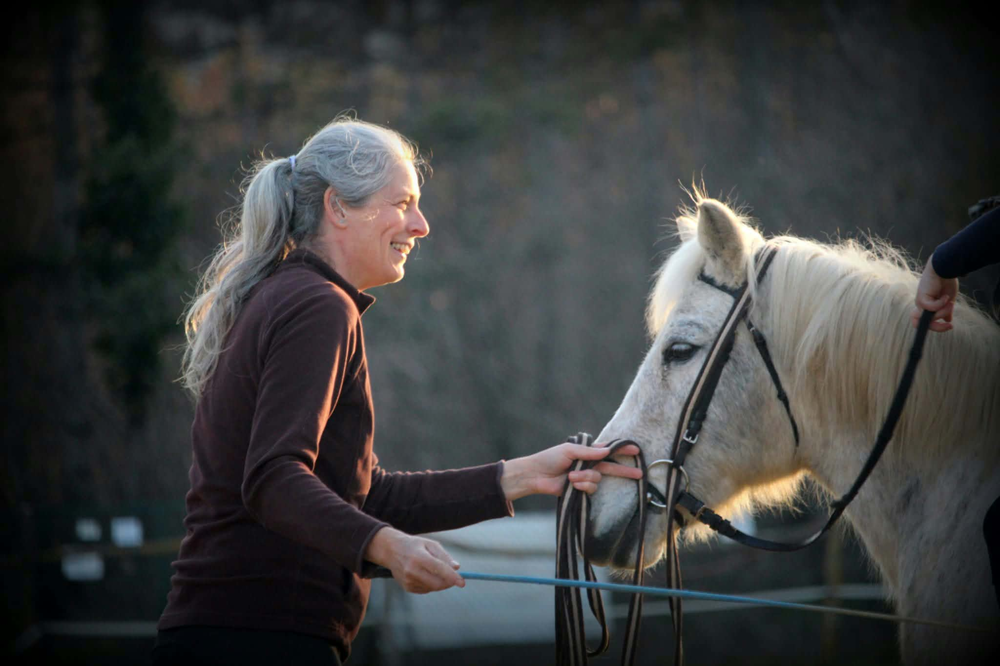

Development occurs in the individual.
Development cannot be externally produced. It unfolds through the individual’s own experience, meaning-making, regulation, relationships, exploration and engagement with reality.
Relational systems · human development
ARSDOMA is a theoretical and research framework for understanding and designing relational systems that support human development.
Development takes place within the individual.
Relational systems shape the conditions under which that development can unfold.
What conditions must the surrounding system create for development to become possible?
ARSDOMA is currently being developed through theoretical work, scientific research and the preparation of applied institutional collaboration.
01 · Framework
Development cannot be externally produced. It unfolds through the individual’s own experience, meaning-making, regulation, relationships, exploration and engagement with reality.
No individual develops in isolation. Family members, educators, peers, professionals, institutions and communities together form a relational field that may support, constrain or destabilise developmental processes.
Many capacities that later become increasingly internal — including regulation, safety, trust, reflection and autonomous action — first emerge within relationships.
The individual develops.
The system is responsible for the conditions.
02 · Relational safety
How can I become safe for the other?
Relational safety cannot simply be declared by a person, programme or institution. It is experienced within the relationship and therefore must remain responsive to the concrete individual.
This shifts attention from abstract intention to lived relational experience: whether connection, participation and development can become possible for this person, in this relationship, in this context.
Safety is not what the system claims to provide. It is what becomes possible in the relationship.
03 · The relational system
ARSDOMA treats development as occurring within a network of relationships. Developmental responsibility cannot be assigned to a single teacher, parent, therapist or institution.
When something is not working, ARSDOMA asks not only what is happening within the individual, but also what may need to change around them.
04 · Learning and creation
Learning can support exploration, questioning, understanding, testing possibilities and increasingly autonomous engagement with reality.
Creation is understood broadly: as contributing something genuinely one’s own rather than merely reproducing what has already been given.
05 · Understanding the relational system
ARSDOMA considers not only declared values, methods and intentions, but also patterns of functioning and participation.
The individual is not only someone within the system. Their functioning may also tell us something about the system.
06 · Human-centred AI
ARSDOMA does not position AI as a replacement for parents, teachers, therapists, mentors, professional teams or human relationships.
Developmental, ethical and relational responsibility remains human.
A high-level concept
AI may support humans in reflecting on their own thinking, interpretations, relationships and systems without transferring relational or normative responsibility to the technology.
AI does not carry development. It may help humans understand developmental conditions more accurately.
07 · Current status
ARSDOMA is a developed theoretical and professional framework that continues to evolve through conceptual work, scientific research and applied development.
Its broader institutional implementation, operationalisation and empirical investigation remain part of an ongoing research and development programme.
08 · Research programme
How does safety become possible as a lived quality of particular relationships and systems?
What surrounding conditions support regulation, meaning-making, agency and increasing autonomy?
How can relational environments enable exploration, understanding and genuinely individual contribution?
How do networks of people, practices and institutions shape developmental possibilities?
How can professional perspectives contribute without fragmenting responsibility for the whole system?
How might AI support reflection while relational, developmental and ethical responsibility remains human?
09 · Publications
ARSDOMA is being developed through an ongoing programme of theoretical, conceptual and applied research. Scientific outputs will be added here as they become publicly available.
Publications
Scientific publications related to ARSDOMA will be listed here as they become publicly available.
10 · Theoretical foundations
ARSDOMA draws on developmental psychology, relational theories, attachment research, mentalisation, phenomenological and existential approaches, psychoanalytic thinking, systems perspectives and contemporary developmental science.
ARSDOMA does not simply combine these traditions. It uses them to address the system-level question of what relational conditions allow individual development to unfold while preserving both connection and increasing autonomy.
11 · People
Founder · Clinical Psychologist
András Bódis is a clinical psychologist and the founder of ARSDOMA. His work focuses on relational safety, human development, mental health and the systemic conditions that support developmental processes.
LinkedIn (opens in a new tab)Co-Founder · Educator
Katalin Domonkos is an educator and co-founder of ARSDOMA. Her work focuses on relational safety and supportive developmental environments in education.
LinkedIn (opens in a new tab)
Professional team
Drawing on decades of experience as a riding coach and natural horsemanship trainer, I founded our riding school, where children’s physical and mental safety comes first. We are building a supportive community where everyone can develop at their own pace, in a true partnership with the horse.
12 · Collaboration
ARSDOMA welcomes dialogue with researchers, educators, psychologists, institutions and organisations.